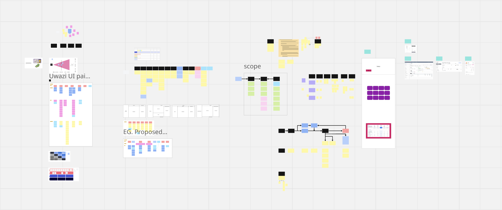
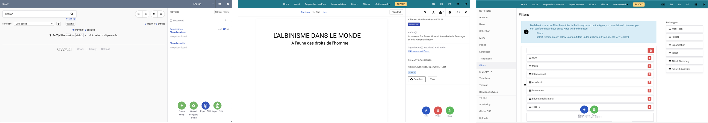
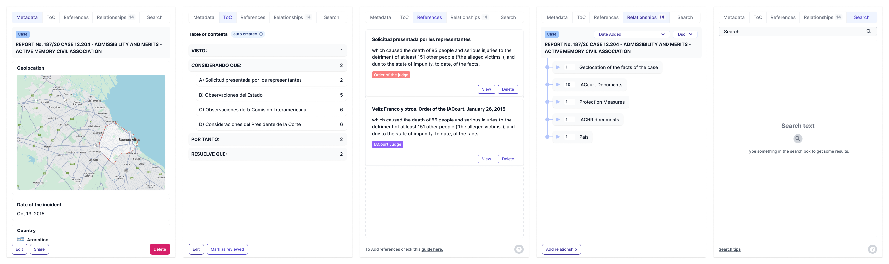
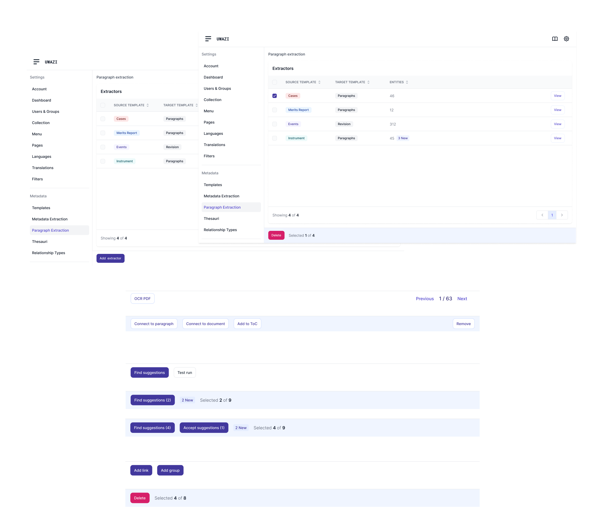
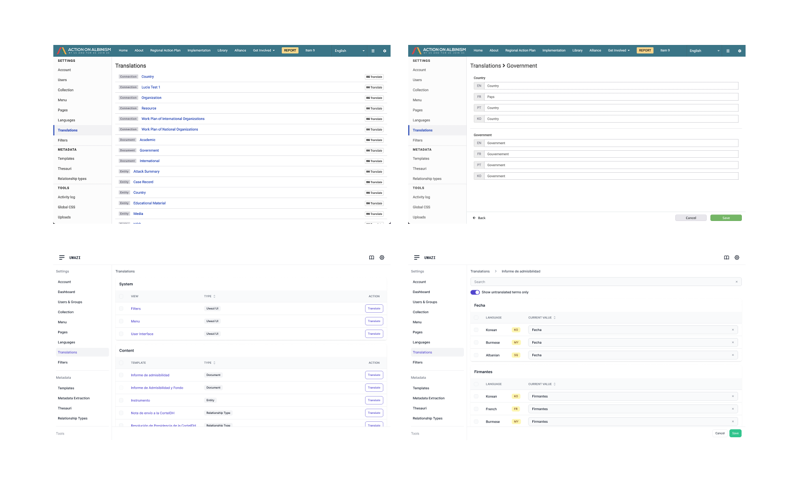
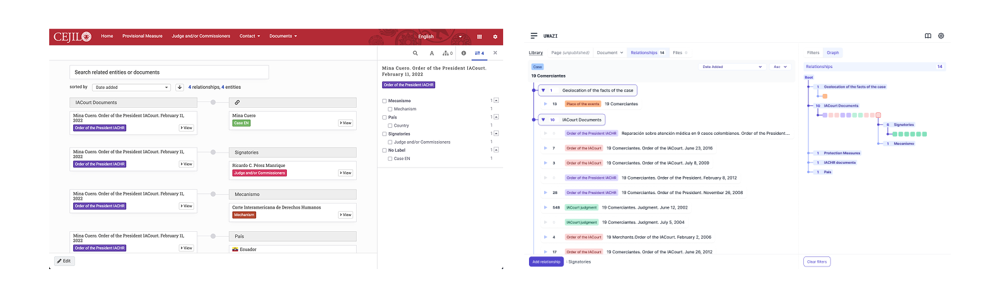
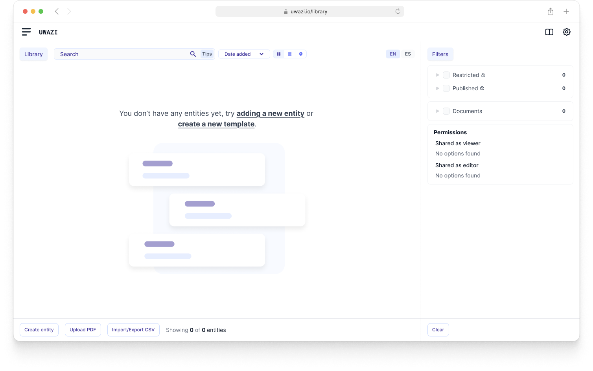
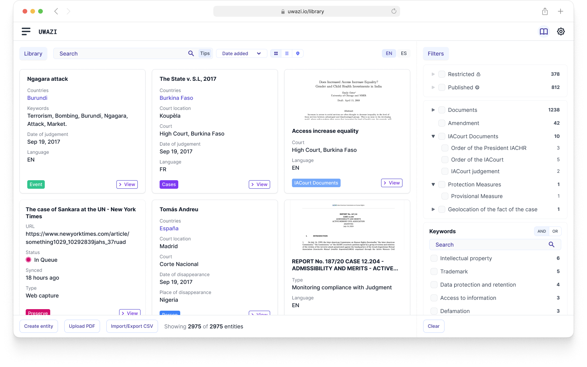
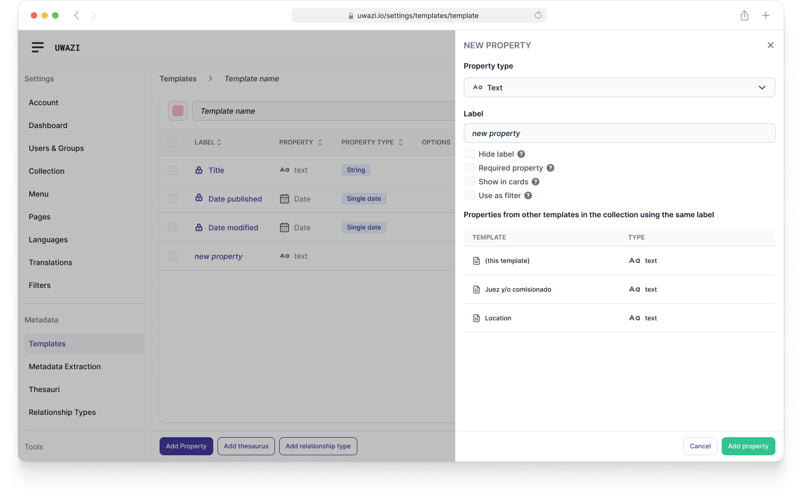

Uwazi: Interface Modernization & System Consistency*
Led a comprehensive redesign of a complex human rights documentation platform, transforming inconsistent features and fragmented user flows into a cohesive, modern interface. Established design patterns, improved navigation architecture, and implemented user-friendly interactions across dozens of features, resulting in a unified experience that made complex data management accessible to human rights organizations worldwide.
Role
Lead UX/UI Designer
Team
CTO, 8 Engineers
Timeline
18 months
Tools
MindNode, Figma, Miro, Tailwind
The Challenge
Uwazi had grown organically over several years into a powerful human rights documentation platform, but this evolution came at a cost. What started as focused solutions for specific needs had accumulated into a patchwork of inconsistent user interfaces, conflicting interaction patterns, and fragmented workflows. Users faced different navigation paradigms across features, inconsistent visual hierarchies, and unpredictable interactions that forced them to relearn the interface with each new section.
This inconsistency created significant barriers to user adoption, particularly for new organizations trying to onboard their teams. Experienced users found themselves constantly context-switching between different interface paradigms, reducing their efficiency and increasing cognitive load when they needed to focus on critical human rights documentation work. The fragmented experience was ultimately hindering the platform's mission of empowering human rights organizations with accessible, powerful tools.
Mapping the extensive features and screens of Uwazi.
Process & Research
This redesign emerged from necessity. After months of fixing details and improving individual interactions, the team recognized it was time for a complete interface overhaul. Through collaborative brainstorming sessions, we agreed on a comprehensive approach: rebuild the UI from scratch with incremental implementation while establishing a unified design system across the entire platform.
I initiated the project with a thorough audit of the existing interface, cataloging inconsistencies in design patterns, interaction flows, and gathering user feedback. Simultaneously, I researched how other database and documentation systems approached similar challenges to identify industry best practices.
- User feedback: Revealed the gap between user expectations and current reality.
- Competitor Analysis: Identified best-in-class usability patterns across similar platforms.
- Journey Mapping: Documented frustrating user paths and pain points.
- Persona Development: Defined core user types and their specific needs.
Key Challenge: We lacked proper handover documentation from the previous designer, requiring me to recreate all implemented UI screens, features, and states in Figma before moving forward.
Recreated all of the implemented UI screens, features, and states, in Figma.
Key insights from audit, research and user interviews.
Implementation screens of the old library empty state, PDF UI, and filters UI.
Full presentation of the redesign audit findings and proposed solutions.
Ideation & Design
Grounded in research insights and industry best practices, I facilitated alignment sessions with the team to establish our design principles. Our focus was aggressive simplification—breaking complex workflows into clear, actionable stages to reduce cognitive load and minimize user errors.
Core Design Constraints:
- Translate existing features 1:1 while eliminating as many bugs as possible.
- Improve interactions between key workflows.
- Unify and standardize reusable components.
- Build a scalable design system for consistent future feature additions.
The design system introduced several key components including a new table-based UI for consistency, drawer interfaces for focused tasks, stepped modals for complex processes, and a Dynamic Action Bar (DAB) that surfaces contextual actions based on user interactions.
New table based UI with spacing handover markers - desktop & mobile.
The new drawer UI.
New stepped modal UI.
The new DAB (Dynamic Action Bar) component, which allows us to introduce contextual actions for users when interacting with different elements.

New Template list and template edit UI.
Testing & Iteration
Our approach emphasized continuous refinement based on real-world usage patterns rather than formal testing protocols. Through iterative releases, we adjusted interface elements and workflows to better align with how human rights organizations actually manage complex documentation. Each iteration built upon previous improvements, allowing us to fine-tune the experience while maintaining system stability for organizations depending on the platform daily.
Side by side comparison of the unified table-based UI for settings.
Top-down comparison of the old implementation and new screens of the translations UI.
Side by side comparison of the old and new components for navigating a complex system of data relationships.
The Solution & Impact
The redesign introduced intuitive navigation, streamlined workflows, and modern interface elements that significantly reduced cognitive load for users managing complex data and documentation. By standardizing components and creating predictable user flows, the new interface dramatically improved onboarding for new organizations while increasing efficiency for existing users. The modernized platform enabled human rights organizations to focus on their critical work rather than wrestling with inconsistent tools.
New empty state and onboarding UI for the library.
New library cards UI with improved information hierarchy.

New PDF view with a modern interface and contextual actions and navigation.
New templates drawer UI with improved navigation and actions.
Learnings & Next Steps
This project reinforced the importance of gradual, user-centered transformation when redesigning complex systems that organizations depend on daily. I learned that achieving design consistency across dozens of features requires careful prioritization and constant user feedback to avoid disrupting established workflows.
Moving forward, the design system foundation we built enables rapid iteration on new features while maintaining the cohesive experience users now expect. The new interface structure allows us to add features without the complexity of redesigning inconsistent patterns each time—a foundation that will serve the platform's evolution for years to come.

Concept for additive Text References UI, allowing users to highlight overlapping selections of text, and link documents and other resources directly within those field selections.

Conceptual mockup of the new relationship v2 property and the query builder UI.
* This represents just a fraction of the comprehensive redesign effort. Beyond the implemented features shown here, extensive conceptual design work explored new usability patterns and interaction paradigms that would further enhance the platform's accessibility and power. These explorations laid the groundwork for future innovations while ensuring the design system could accommodate evolving user needs and emerging technologies in the human rights documentation space.
Huridocs | 2021-2025